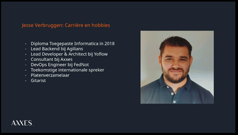
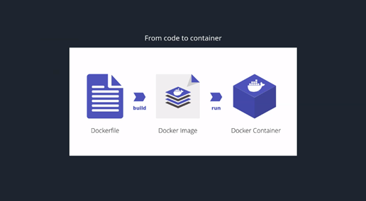

Activiteit 3: seminarie Axxes – Development met en voor Docker
Op woensdag 25 november 2020 vond het seminarie Docker van het bedrijf Axxes plaats op de Hogeschool PXL. De presentatie draaide rond development met en voor Docker en het werd gegeven door de spreker Jesse Verbruggen. Ik koos dit seminarie omdat we in die periode veel over Docker aan het bijleren waren en omdat Docker ook vaak gebruikt wordt in verschillende projecten, vakken en bedrijven. Ik wou dus heel wat bijleren omdat Docker voor mij nog altijd een redelijk ingewikkeld begrip was.
De doelstelling van dit seminarie was ons meer informeren over Docker en het gebruik duidelijk te maken door een uitgebreide toepassing waarin we in een startproject Docker moesten implementeren. Voor mezelf had ik de doelstelling gezet dat het begrip Docker voor mij veel duidelijker zou moeten worden en dat ik het kan implementeren in mijn eigen projecten.
Jesse Verbruggen begon de presentatie met ons voor te bereiden op de demo van later. Hij gaf aan dan we enkele requirements zoals Docker, Python, VsCode en REST Client moesten installeren. Hierna gaf hij een korte introductie over zichzelf zoals je kan zien in de onderstaande figuur. Daaropvolgend begon hij met een introductie over Docker zelf. Docker is geen VMWare, Virtualbox, Hyper-V, Qemu of Citrix dus concluderend: geen virtuele machine. Maar Docker bevat wel containers, integraties met Host OS, shared resources, lightweight footprint, een snelle start-up en heeft altijd een kleine filesize.
Docker is open source. Dit betekent dat iedereen kan bijdragen aan Docker en het kan uitbreiden om aan zijn eigen behoeften te voldoen moest er nood zijn aan extra functies die niet standaard beschikbaar zijn. Dockerfile is de basis voor het bouwen van Docker-images. Het is een tekstbestand dat een lijst van commando’s of instructies bevat die beschrijven hoe een Docker-image op basis daarvan gebouwd moet worden. Het commando ‘Docker build’ vertelt Docker zelf om deze image te bouwen door de inhoud (de instructies) in de Dockerfile te volgen. De flow hiervan is te zien in onderstaande figuur.
Docker-images zelf bevatten verschillende lagen: de kernel/bootfs, een base image, build dependencies, de source code, commands, start-up commands en een container runtime. Docker containers zijn configureerbaar in runtime met environment variabelen, networking, een start-upcommando, een user, volumes en een workdirectory.
Na deze theoretische uitleg over Docker mochten we dit toepassen in een project genaamd ‘Project Pets’. In dit project is het mogelijk om huisdieren op te zoeken, toe te voegen, aan te passen en te verwijderen. Al dit wordt gedaan via een RESTful API, wat een application programming inteface (API) is die voldoet aan de beperkingen van de REST-architectuurstijl en interactie met RESTful-webservices mogelijk maakt.
De demo was voor mij uitgebreider dan ik had verwacht. In de lessen werkten we vaak alleen met het builden van images, maar nog niet echt met een volledige startup van alles. Stap één van de demo was om de applicatie te Dockerizen. Hierbij was er al een Dockerfile aanwezig die ons hielp met een Docker-image op te halen die alle dependencies dan installeert. Hierna volgde een Docker-build en het runnen van de API. De laatste stappen waren het maken van onze eigen Docker-image, het starten van een eigen container en ten slotte een API-design implementeren zodat de applicatie ook volledig werkte.
Het resultaat zou een volledig werkende applicatie moeten zijn waarbij we dus huisdieren kunnen opzoeken, toevoegen, aanpassen en verwijderen gebouwd in een Docker-omgeving.
Het hele seminarie verliep naar mijn mening heel snel. De theoretische uitleg in het begin viel wel mee en hier kon ik nog volgen, maar vanaf het moment dat de demo startte ben ik de draad een beetje kwijtgeraakt omdat er zoveel commando’s waren die we moesten uitvoeren. Ik heb toen besloten om niet zelf mee te doen met de demo, maar om gewoon mee te kijken naar wat de spreker deed in de hoop dat het zo misschien duidelijker werd. Vanaf dat moment ging het een beetje beter, maar het was nog steeds te veel informatie in die korte tijd.
Nu ik achteraf dit seminarie aan het samenvatten ben, merk ik wel dat ik veel meer begrijp omdat ik alles nog eens rustig heb kunnen nalezen. Ook de demo zelf stond stap voor stap uitgelegd in de slides en dit is voor mij ook zo beter te volgen zonder een tijdsdruk. Dit was ook de reden dat ik dit seminarie wou opnemen in dit deel van het portfolio zodat ik toch nog terug een kleine zelfstudie kon doen over Docker.
Uiteindelijk ben ik wel tevreden dat ik dit seminarie heb gevolgd omdat ik achteraf bij het nalezen wel een duidelijker beeld heb gekregen over het Docker-begrip.
Nu op stage merk ik dat het bedrijf ook vaak werkt met Docker. We hebben dan ook de opdracht gekregen om hier eens naar te kijken en onszelf meer te informeren. In de toekomst ben ik ook heel zeker dat ik vaak gebruik ga maken van Docker in verschillende toepassingen.